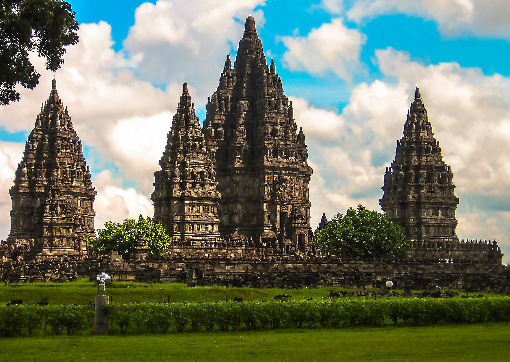

5. Prambanan |
|  |
|
Destinasi Prambanan adalah salah satu situs warisan dunia UNESCO yang paling ikonik di Indonesia. Candi Prambanan adalah kompleks candi Hindu yang terletak di Yogyakarta, Jawa Tengah, dan menawarkan pengalaman budaya dan sejarah yang luar biasa. Destinasi Prambanan adalah lanskap budaya yang memikat yang membawa Anda kembali ke zaman kuno Jawa, ketika agama Hindu dan Buddha berpengaruh besar di wilayah ini. Candi Prambanan adalah candi Hindu terbesar di Indonesia dan merupakan perwujudan luar biasa dari seni arsitektur Hindu. Kompleks candi ini terdiri dari sejumlah candi yang indah yang dibangun pada abad ke-9 dan merupakan tempat suci untuk pemujaan Dewa Siwa. Daya tarik utama dari Destinasi Prambanan adalah Candi Siwa, yang merupakan candi utama dalam kompleks ini. Candi Siwa adalah candi yang paling terkenal dan mengesankan dengan arsitektur tinggi dan indah yang mencerminkan kerajaan Hindu kuno. Candi ini dikelilingi oleh candi-candi lain yang juga luar biasa, termasuk Candi Brahma dan Candi Wisnu. Selain candi-candi utama, Anda juga akan menemukan candi-candi kecil dan patung-patung yang menceritakan cerita-cerita dari epik Ramayana dan Mahabharata. Candi-candi ini adalah contoh seni relief yang luar biasa dan menyajikan penggambaran yang indah tentang kehidupan dan budaya Hindu kuno. Prambanan juga menjadi tuan rumah pertunjukan seni tradisional yang menggambarkan cerita-cerita Hindu dan menawarkan pengalaman budaya yang mendalam. Destinasi Prambanan adalah tempat yang sempurna untuk para pecinta sejarah, seni, dan budaya. Ini adalah situs warisan dunia yang memikat yang memungkinkan Anda untuk merenungkan masa lalu Indonesia yang kaya dan menghargai warisan budaya yang indah. Selama Anda berada di Yogyakarta, Prambanan adalah destinasi yang tidak boleh dilewatkan. |
Paket WisataPrambanan adalah sebuah kompleks candi Hindu yang terletak di Jawa Tengah, Indonesia. Harga tur wisata di Prambanan mungkin lebih sederhana dibandingkan dengan destinasi wisata alam yang lebih populer. Berikut adalah perkiraan harga untuk berbagai jenis tur dan aktivitas di Prambanan: |
| Jenis | Deskripsi |
|---|---|
| Tiket Masuk Prambanan | Harga tiket masuk untuk wisatawan asing biasanya berkisar antara 200.000 hingga 300.000 Rupiah per orang. |
| Warga negara Indonesia biasanya dikenakan biaya masuk yang lebih rendah. | |
| Akomodasi | Jika Anda merencanakan menginap di sekitar Prambanan, harga penginapan per malam dapat berkisar antara 200.000 hingga 700.000 Rupiah tergantung pada jenis akomodasi dan fasilitasnya. |
| Tur Guide | Jika Anda ingin tur yang dipandu oleh seorang pemandu lokal, harga dapat bervariasi, mulai dari sekitar 100.000 hingga 300.000 Rupiah tergantung pada lama tur dan bahasa yang digunakan. |
| Kegiatan Tambahan | Beberapa destinasi wisata di sekitar Prambanan, seperti Candi Sewu, bisa memiliki biaya masuk tambahan. |
| Anda mungkin ingin menyewa sepeda atau becak untuk menjelajahi sekitar Prambanan. | |
| Makanan | Biaya makanan akan bervariasi tergantung pada restoran atau warung yang Anda kunjungi. Makan di warung lokal bisa lebih terjangkau daripada makan di restoran wisata. |
|
Harga-harga di atas adalah estimasi dan dapat berubah tergantung pada waktu perjalanan, musim, dan penawaran khusus yang mungkin berlaku. Selalu disarankan untuk memeriksa dengan pihak yang berwenang dan penyelenggara tur untuk mendapatkan perkiraan harga yang lebih akurat sesuai dengan rencana perjalanan Anda. Prambanan adalah situs warisan dunia yang menakjubkan dengan arsitektur candi yang indah, sehingga pastikan Anda merencanakan kunjungan Anda dengan baik dan menjelajahi keindahan budaya dan sejarahnya. |